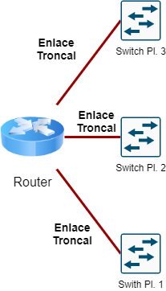
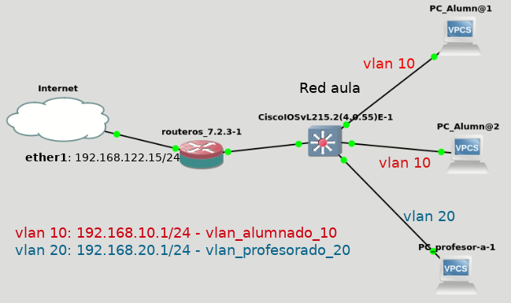

6.1.3 Interconectar diferentes VLAN
1. ¿Se pueden interconectar diferentes VLAN?
La respuesta es sí, para ello, se necesita hacer uso de los enlaces troncales que se han comentado anteriormente:

Figura 1. Enlaces troncales.
En el gráfico se puede observar cómo se ha conectado un router como varios enlaces troncales a distintos switches.
En el siguiente vídeo, se describen siguientes acciones de fortificación en una red de un aula de un centro educativo. Inicialmente se configura la conectividad del aula mediante un switch NO gestionable y a contnuación, se configura con un Switch gestionable Cisco. El esquema de red es el siguiente:

Figura 2. Esquema de red de un aula de un centro educativo.
Las configuraciones que se describen son:
- Identificación/configuración de las interfaces de red del router Mikrotik.
- Identificación de las vlan de la red.
- Creación de reglas en el firewall del Mikrotik para evitar que equipos en diferentes o iguales vlan puedan verse entre ellos, es decir, puedan enviar paquetes ICMP, conexión ssh, etcétera. Ejemplo un equipo en la vlan10 no podrá hacer un ping a un equipo de la vlan 20 o vlan 10.
- Configuración de un switch gestionable Cisco en una red de Aulas con interconexión de diferentes vlan.
Vídeo 1. Switch gestionable en gns3.
Obra publicada con Licencia Creative Commons Reconocimiento No comercial Compartir igual 4.0